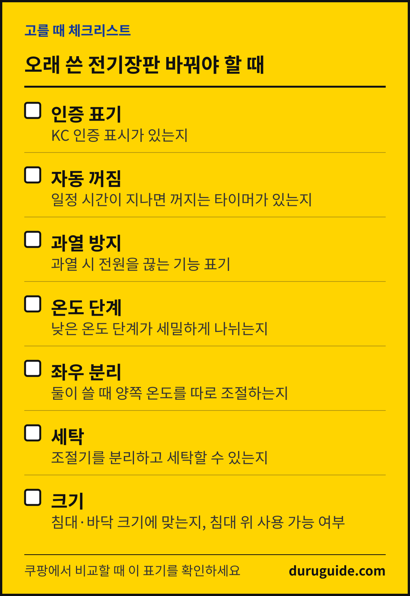

오래 쓴 전기장판 바꿔야 할 때, 안전 표기와 고르는 기준
이런 상황이죠
몇 해째 쓰는 전기장판을 꺼냈는데 한쪽만 뜨겁고 다른 쪽은 미지근해요. 조절기 불이 깜빡이거나, 코드 근처에서 냄새가 나거나, 장판에 누렇게 변한 자국이 보이기도 해요. 아직 켜지기는 하니까 그냥 써도 될지 고민되지요.
왜 생기나
전기장판 안에는 가는 열선이 깔려 있어요. 접어서 보관하거나 무거운 물건에 오래 눌리면 열선이 꺾이거나 끊어질 수 있어요. 그러면 일부만 뜨거워지거나 꺾인 부분에 열이 몰려요. 조절기와 전원 코드도 오래 쓰면 피복이 갈라지거나 접촉이 나빠질 수 있어요. 몇 년이 지나면 꼭 바꿔야 한다는 기준은 제품마다 달라서 단정하기 어렵지만, 아래 신호가 보이면 쓰지 않는 게 안전해요.
- 일부분만 유난히 뜨겁거나 차가워요.
- 타는 냄새가 나거나 장판 표면이 변색됐어요.
- 코드 피복이 갈라졌거나 플러그가 뜨거워져요.
- 조절기가 온도 단계와 다르게 움직여요.
사기 전에 먼저 해볼 것
- 조절기 연결부터 확인해요. 장판과 조절기 연결 단자가 헐겁게 꽂혀 있으면 제대로 데워지지 않을 수 있어요. 끝까지 눌러 꽂아 보세요.
- 멀티탭을 바꿔 꽂아 봐요. 다른 콘센트에 직접 꽂아도 같은지 확인해 보세요.
- 제조사 안내를 확인해요. 조절기만 따로 구할 수 있는 경우도 있어요. 다만 장판 자체의 이상 신호가 보이면 수리보다 교체가 나아요.
- 보관 습관을 바꿔요. 앞으로는 접지 말고 둥글게 말아서 보관하세요.
고를 때 체크리스트
| 확인 항목 | 보는 기준 |
|---|---|
| 인증 표기 | KC 인증 표시가 있는지 |
| 자동 꺼짐 | 일정 시간이 지나면 꺼지는 타이머가 있는지 |
| 과열 방지 | 과열 시 전원을 끊는 기능 표기 |
| 온도 단계 | 낮은 온도 단계가 세밀하게 나뉘는지 |
| 좌우 분리 | 둘이 쓸 때 양쪽 온도를 따로 조절하는지 |
| 세탁 | 조절기를 분리하고 세탁할 수 있는지 |
| 크기 | 침대·바닥 크기에 맞는지, 침대 위 사용 가능 여부 |
이런 분께는 맞지 않아요
- 장판이 고르게 데워지고 코드에 이상이 없다면 아직 바꿀 때가 아니에요.
- 방 공기 자체가 너무 차갑다면 장판만으로는 부족하니 외풍부터 막아 보세요.
쓸 때 주의하세요
새 장판을 받으면 처음 며칠은 낮은 온도로 쓰면서 고르게 데워지는지, 조절기가 단계대로 움직이는지 확인해 보세요. 침대 위에서 쓸 때는 매트리스 모서리에 걸쳐 접히지 않게 펴고, 조절기는 이불 속이 아니라 바깥에 두세요. 오래 쓴 장판을 버릴 때는 지역의 대형 생활폐기물이나 소형 가전 배출 방법을 확인하세요.
켠 상태로 두꺼운 이불을 여러 겹 덮어 두면 열이 빠지지 못해 과열될 수 있어요. 잠들 때는 낮은 온도와 자동 꺼짐 타이머를 쓰고, 외출할 때는 플러그를 뽑아 두세요.
추천 제품 찾기
먼저 쓰는 자리와 쓰는 사람 수를 정하세요. 쿠팡에서는 KC 인증, 자동 꺼짐, 과열 방지, 세탁 가능 여부, 크기 표기를 비교해 보시면 돼요. 현재 가격은 쿠팡에서 확인해 주세요.

위 표의 표기를 비교해 보세요.
현재 가격은 쿠팡에서 확인해 주세요.
이 포스팅은 쿠팡 파트너스 활동의 일환으로, 이에 따른 일정액의 수수료를 제공받습니다.